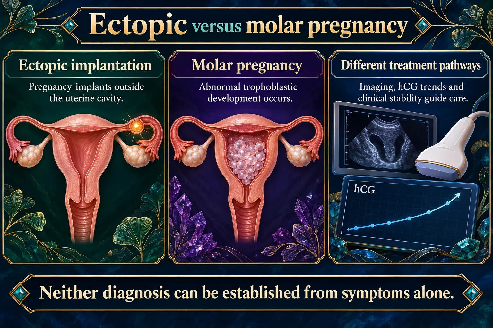
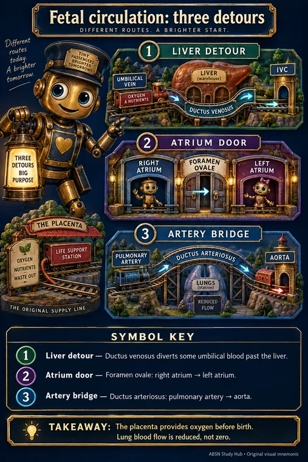

Conception, Fetal Development & Placental Function
Exam 1 — Antepartum — contraception, conception, fetal surveillanceWeek 2
NUR 234 · MODULE 2 · PLAY & PRACTICE
🧬 Placenta Delivery Routes
24 matching prompts, 10 course questions and 6 visual or hands-on exercises. Four pairs at a time, with saved practice.
Play this module →
After birth, ventilation and cord clamping change pressures and support functional shunt closure.
Read the picture
Placenta and umbilical vein
Oxygenated blood returns from the placenta.
Fetal shunts
Ductus venosus, foramen ovale and ductus arteriosus direct flow.
Umbilical arteries
Carry blood back toward the placenta.
Ductus venosus
Routes part of umbilical venous flow past the liver into systemic venous circulation.
Foramen ovale
Permits right-atrial to left-atrial flow.
Ductus arteriosus
Connects pulmonary artery and descending aorta, bypassing much pulmonary flow.
💡 The one idea
The placenta is a filter that leaks. It passes oxygen, nutrients and antibodies — and also alcohol, nicotine, most drugs and many viruses. Every teratogen question rests on that.
![Early development, six terms. Blastocyst stage: an early hollow ball of cells with an inner cell mass, outer cells and a fluid-filled cavity, reached around day 5 after fertilization. Embryogenesis: the process of forming and developing the embryo; the embryonic period ends about 8 weeks after fertilization, about 10 weeks of gestational age. Amnion: the inner membrane enclosing the embryo and amniotic fluid - a protective fluid sac. Chorion: the outer membrane whose villi help form the fetal part of the placenta - the placental connection. Yolk sac: supports early nutrient transfer and early blood-cell formation. Allantois: a small embryonic outgrowth associated with the developing urinary system that contributes to the urachus. The placenta handles fetal waste transfer; in humans the allantois is mainly a developmental remnant. Gestational age is usually about 2 weeks ahead of age since fertilization.](img/infographics/early-development-six-terms.webp)
![Early development, weeks 5 to 10. All weeks are gestational age, counted from the first day of the last menstrual period, about 2 weeks ahead of age since fertilization. Weeks 1 to 2 are before conception; weeks 3 to 4 are fertilization, cell division and implantation. Week 5, foundations: brain, spinal cord, heart and primitive gut begin developing, and early blood and kidney cells form. Weeks 6 to 7, buds and circulation: arm and leg buds grow, cardiac activity and circulation are established, and eyes, ears and facial structures begin taking shape. Week 8, limbs take shape: arms and legs lengthen, paddle-like hands and feet develop, fingers begin forming, brain growth continues. Week 9, details emerge: elbows develop, toes become visible, nipples and hair follicles begin forming, major organ systems are developing. Week 10, a clearer human form: face and outer ears become more distinct, eyelids develop toward closure, intestines continue developing and rotating; around the end of this period development transitions to the fetal stage. By body system: muscles and bones go limb buds to limbs to digits; heart and vessels go early heart to pumping circulation; lungs airway buds branch but lungs remain immature; the gut tube develops, grows and rotates; kidneys and ducts develop; the neural tube becomes brain and spinal cord; eyes, ears, skin and facial features take shape. Foundations, buds, limbs, details, human form. Milestones are approximate and overlap; formed does not mean fully mature.](img/infographics/early-development-weeks-5-10.webp)

🖼️ Ectopic and molar pregnancy.
Neither diagnosis can be established from symptoms alone.
Read the picture
Ectopic implantation
Pregnancy implants outside the uterine cavity.
Molar pregnancy
Abnormal trophoblastic development occurs.
Different treatment pathways
Imaging, hCG trends and clinical stability guide care.
Ectopic risk
Rupture can cause internal bleeding and shock.
Molar follow-up
Serial hCG surveillance checks for persistent trophoblastic disease.
Urgent symptoms
Severe pain, syncope, shoulder-tip pain or heavy bleeding needs immediate assessment.
Weeks 3–8 is when organs form, so it is when damage is permanent — often before a woman knows she is pregnant. That is the argument for folic acid before conception, not after.
| Structure | Job | Remember |
|---|---|---|
| Placenta | Exchange, and an endocrine organ | Makes hCG, estrogen, progesterone, hPL |
| Umbilical cord | Connects fetus to placenta | AVA — 2 Arteries, 1 Vein |
| Amniotic fluid | Cushions, allows movement, stabilizes temperature | Normal 800–1200 mL at term |
| Wharton’s jelly | Protects cord vessels | Prevents compression |
⭐ The cord rule that is backwards from everything else
The umbilical VEIN carries oxygenated blood TO the baby. The two arteries carry deoxygenated blood away.
It is the opposite of adult circulation, which is exactly why it is asked. Two arteries and one vein — a two-vessel cord is abnormal and prompts a check for kidney anomalies.
🧠 Fetal shunts — three shortcuts around the lungs
- Ductus venosus — bypasses the liver
- Foramen ovale — right atrium straight to left atrium
- Ductus arteriosus — pulmonary artery to aorta
All three exist because the lungs are full of fluid and do no work in utero. They begin closing with the first breaths; the ductus arteriosus can take a few days.

The placenta provides oxygen before birth. Lung blood flow is reduced, not zero.
Open the picture, symbol key and recall question →↗ Full-size picture🖼️ The three fetal shunts, drawn out. Follow the blood from the placenta: 1 ductus venosus skips the liver, 2 foramen ovale skips the right ventricle and lungs, 3 ductus arteriosus skips the lungs again. Red is oxygen-rich, purple is mixed, blue is oxygen-poor.
After birth, ventilation and cord clamping change pressures and support functional shunt closure.
Read the picture
Placenta and umbilical vein
Oxygenated blood returns from the placenta.
Fetal shunts
Ductus venosus, foramen ovale and ductus arteriosus direct flow.
Umbilical arteries
Carry blood back toward the placenta.
Ductus venosus
Routes part of umbilical venous flow past the liver into systemic venous circulation.
Foramen ovale
Permits right-atrial to left-atrial flow.
Ductus arteriosus
Connects pulmonary artery and descending aorta, bypassing much pulmonary flow.


🖼️ GTPAL and the three levels of certainty in pregnancy.
GTPAL counts pregnancies and living children in different ways; keep those units separate.
Read the picture
G: gravida
Total pregnancies, including the current one.
T, P and A
Pregnancies ending at term, preterm or before the threshold used.
L: living
Number of living children.
One pregnancy
Twins count as one pregnancy in gravida and the outcome category.
More than one child
Twins may add two to the living-child count.
Thresholds
Use the gestational definitions specified by the course and clinical system.
⭐ High-yield — what the exam actually asks
Show 5 moreHide these 5
- Fertilization happens in the outer third / ampulla of the fallopian tube. Ovum viable ~
24 hr, sperm ~48–72 hr. - The zygote travels
3–5 days, becomes a blastocyst, and implants 6–10 days after fertilization. Implantation within 12–24 hours would mean ectopic or abnormal. - Embryo ~weeks 3–8 = organogenesis = peak teratogen vulnerability. Fetus from week 9. Organs begin forming in the first trimester but are not fully functional until later.
- Fetal heart tones by Doppler at 10–12 weeks. Four weeks is far too early — that is a standing distractor.
- Quickening: 16–20 weeks in a first pregnancy, as early as
14–16in a multigravida because she recognizes the sensation. Light fluttering, low in the abdomen.
Show 3 moreHide these 3
- Surfactant rises around 34 weeks; lungs are considered mature ~34–36 weeks. Twenty-four weeks is not mature.
- Age of viability ~
20–24 weeks/ roughly500–600 g. - The placenta transports oxygen and nutrients and makes hCG, hPL, estrogen, progesterone. It is not a complete toxin barrier.
📕 From your ATI review book
Covered by ch. 2 & 3 — note the book has no standalone embryology chapter.
Show 5 moreHide these 5
- hCG peaks at 8–10 weeks, then falls and plateaus from ~20 weeks to term. A sluggish rise suggests ectopic; a fall suggests loss; a molar pregnancy runs abnormally high. Its job is keeping the corpus luteum alive until the placenta takes over.
- Serum hCG is more sensitive than urine early on; home tests need the first morning void.
- Hormones by function: relaxin → vasodilation, less uterine contractility, cervical softening · prolactin → milk synthesis · oxytocin → contractions, milk ejection, bonding.
- Most structural birth defects arise between about 2 and 8 weeks — which is the whole argument for folic acid preconception, not at the first prenatal visit.
- Fertility workup starts with semen analysis — cheapest and least invasive. Evaluate a female client after 12 months trying if under 35, 6 months if 35+, immediately if over 40.
Show 2 moreHide these 2
- Hysterosalpingography uses iodinated contrast → assess allergy history first.
- Blood volume rises
30–50%; heart rate climbs ~20% over baseline; GFR rises while total urine output stays about the same.
📚 From your Maternal & Child textbook
Pillitteri, Maternal and Child Health Nursing — ch. 9 (normal pregnancy and the developing fetus).
- Timing is the teratogen principle. Organ systems form in the first trimester, so that is when structural malformation risk peaks; later exposure affects growth and function instead.
- The placenta is not a barrier. Most drugs, alcohol and nicotine cross it.
⚠️ Exam traps
- Three numbers get swapped constantly: Doppler at 10–12 weeks, quickening at 16–20, lung maturity at 34–36.
- Weeks 3–8 is the teratogen window. Any first-trimester medication question is testing this.
🧠 Mind maps 1
One per disorder, built from the structure of your ATI chapter.
🧪 What confirms it
- Pelvic exam checks for uterine or vaginal structural anomalies.
- Hormone panel: prolactin, FSH, LH, estradiol, progesterone, and thyroid levels assess the hypothalamic-pituitary-ovarian axis.
- Postcoital test evaluates coital technique and how sperm interact with cervical mucus.
- Ultrasound (transvaginal or abdominal) visualizes the reproductive organs.
🩺 What you do
- Recognize infertility as a major life stressor; encourage clients to voice their feelings.
- Explain the roles of the genetic counselor, reproductive specialist, geneticist, and pharmacist.
- Monitor for adverse effects of fertility medications.
- Warn that ART significantly raises the odds of a high-risk multiple gestation pregnancy.
⚠️ What goes wrong
- Ectopic pregnancy: ovum implants outside the uterus, often from endometrial tissue or adhesions in the tube.
- As an ectopic pregnancy grows, tube rupture can cause severe bleeding requiring surgical removal.
- Unruptured ectopic pregnancy is treated with surgical removal or methotrexate to dissolve it.
- Losing the tube from ectopic pregnancy raises risk of recurrence and future infertility.
Read left to right: who gets it → what you see → what confirms it → what you do → what goes wrong. Cover a column and rebuild it out loud.
📊 Lecture slides 1
The deck this module is built on.
🎥 Lecture recordings 7
Tap a card to open that recording in Google Drive. The same list lives in the lecture library.
Infographics and original handouts by topic
Open a topic to find its visual references beside the notes.
Module-wide guides and review
Visual references by topic 10
Pictures and original handouts are filed beside their topics. These shortcuts open the right section.
- Placenta: Exchange And Support
- Fetal Circulation: Three Shortcuts
- Early Development — Weeks 5–10
- Early Development — 6 Terms to Know
- Pregnancy hormones: who does what?
- TORCH Infections in Pregnancy
- Conception, Fetal Development & the Placenta
- Fetal circulation: three detours
- NUR 234 Exam 1 — Study Guide
- NUR 234 Exam 1 — Infographic Collection
📋 Active Learning Templates 2
One per disorder. Every row is filled from that section of the ATI chapter — print it, cover the right, rebuild it.
📋 Fertility6 parts
Filled from ATI chapter 2, row by row from that chapter’s own sections — 12 of 12 rows have content.
7 rows came from outside your ATI chapter — 5 cite a source, 2 are built from this page’s own notes. Each one is labeled.
🧭 What it isAlterations in Health (Diagnosis) · Health Promotion & Disease Prevention
Alterations in Health (Diagnosis)
- Covers infertility evaluation and care for people unable to conceive after 6 to 12 months, including causes, diagnostic workup, assisted reproductive technologies, genetic counseling, and psychosocial support for fertility-related grief and treatment decisions.
Health Promotion & Disease Prevention
Not in your ATI chapter — filled from NICHD.
- Losing just 5% of body weight can meaningfully raise the odds of ovulation in women who have PCOS.
- Avoiding tobacco, heavy alcohol use, and illegal drugs protects fertility in both female and male partners.
- Limiting exposure to known reproductive toxins, such as certain pesticides and industrial chemicals, is advised to protect fertility.
Eunice Kennedy Shriver National Institute of Child Health and Human Development · What lifestyle and environmental factors may be involved with infertility in females and males? · open the source →
👀 How it shows upAssessment — Risk Factors · Assessment — Expected Findings
Assessment — Risk Factors
Not in your ATI chapter — filled from NICHD.
- Both obesity and being underweight impair ovulation and reduce the chance of conception in women.
- In men, obesity is linked to lower sperm count, and high blood pressure can alter sperm shape.
- Radiation therapy and chemotherapy can cause infertility in either partner, depending on dose and treatment site.
NICHD · What lifestyle and environmental factors may be involved with infertility in females and males? · open the source →
Assessment — Expected Findings
From this module — built from the notes above on this page, not a section of the ATI chapter.
- Infertility is a diagnosis of time: no conception after
12 monthsof unprotected sex, or6 monthsif she is over 35. - Expected on examination: often entirely normal findings in both partners — which is itself distressing and needs naming.
- Irregular or absent periods point toward an ovulation problem; PCOS commonly adds acne, hirsutism and weight gain.
- Painful periods and pain with intercourse suggest endometriosis.
- Expect grief, guilt, and strain on the relationship. Ask about mood at every visit — it is part of the assessment, not an aside.
🧪 How it is confirmedLaboratory Tests · Diagnostic Procedures
Laboratory Tests
Not in your ATI chapter — filled from NICHD.
- A progesterone blood level drawn around day 23 of the cycle helps confirm that ovulation occurred.
- FSH and AMH blood tests estimate how many eggs remain in a woman's ovarian reserve.
- Semen analysis requires the male partner to avoid ejaculation for about 48 hours before the sample.
NICHD · How is infertility diagnosed? · open the source →
Diagnostic Procedures
- Pelvic exam checks for uterine or vaginal structural anomalies.
- Hormone panel: prolactin, FSH, LH, estradiol, progesterone, and thyroid levels assess the hypothalamic-pituitary-ovarian axis.
- Postcoital test evaluates coital technique and how sperm interact with cervical mucus.
- Ultrasound (transvaginal or abdominal) visualizes the reproductive organs.
- Hysterosalpingography: dye study confirms tubal patency; screen for iodine or shellfish allergy beforehand.
🩺 What you doNursing Care · Medications · Therapeutic Procedures
Nursing Care
- Recognize infertility as a major life stressor; encourage clients to voice their feelings.
- Explain the roles of the genetic counselor, reproductive specialist, geneticist, and pharmacist.
- Monitor for adverse effects of fertility medications.
- Warn that ART significantly raises the odds of a high-risk multiple gestation pregnancy.
- Share info on ART options and alternatives such as adoption.
- Refer clients to grief and infertility support groups.
- Recommend genetic counseling when there's a family history of inherited disorders.
- Refer for genetic counseling if the client carries sickle cell trait/anemia or is over 35.
- Explain that amniocentesis for prenatal genetic testing carries some fetal risk.
Medications
Not in your ATI chapter — filled from NICHD.
- Clomiphene citrate triggers ovulation in about 80% of users, with roughly half going on to conceive.
- Clomiphene carries about a 10% chance of twins, with higher-order multiples occurring in under 1% of cases.
- Injectable gonadotropins stimulate egg growth directly but carry a multiple-birth rate near 30%, higher than clomiphene.
- Letrozole lowers estrogen production to trigger ovulation and may work better than clomiphene for PCOS-related infertility.
NICHD · Fertility Treatments for Females · open the source →
Therapeutic Procedures
- Clomiphene citrate and letrozole stimulate ovarian follicle production.
- Metformin supports ovulation; exogenous progesterone primes the endometrium for implantation.
- IUI: prepared sperm is placed directly into the uterus at ovulation.
- IVF-ET: eggs are retrieved, fertilized in the lab, and the embryo is transferred to the uterus.
- Gamete intrafallopian transfer: retrieved oocytes and motile sperm are injected together into the fallopian tube via laparoscopy.
- Donor oocyte: donor eggs are fertilized via IVF after the recipient's uterus is hormonally prepared.
💬 Around the patientClient Education · Interprofessional Care
Client Education
Not in your ATI chapter — filled from NICHD.
- Instruct male partners to abstain from ejaculation for about 48 hours before providing a semen sample.
- Explain that more than one semen sample may be needed because sperm production varies over time.
- Gonadotropin injections typically run 7 to 12 days and require ultrasound monitoring of egg growth.
NICHD · How is infertility diagnosed?; Fertility Treatments for Females · open the source →
Interprofessional Care
From this module — built from the notes above on this page, not a section of the ATI chapter.
- Reproductive endocrinologist leads the workup and any assisted reproduction.
- Genetic counselor for recurrent loss, known carrier status, or maternal age over 35.
- Mental health — infertility care has a high dropout rate, and distress is the usual reason.
- Pharmacist for injection teaching and the ovulation-induction schedule.
- Financial counselor — treatment cost drives more decisions than clinicians tend to realize.
⚠️ What goes wrongComplications
Complications
- Ectopic pregnancy: ovum implants outside the uterus, often from endometrial tissue or adhesions in the tube.
- As an ectopic pregnancy grows, tube rupture can cause severe bleeding requiring surgical removal.
- Unruptured ectopic pregnancy is treated with surgical removal or methotrexate to dissolve it.
- Losing the tube from ectopic pregnancy raises risk of recurrence and future infertility.
- ART raises the incidence of multiple gestation, adding risk for the client and each fetus.
Visual references for this topic


Genetic and congenital disorders · original handout →
Original handouts and visual references
📋 Expected Physiological Changes During Pregnancy6 parts
Filled from ATI chapter 3, row by row from that chapter’s own sections — 12 of 12 rows have content.
9 rows came from outside your ATI chapter — 2 cite a source, 7 are built from this page’s own notes. Each one is labeled.
🧭 What it isAlterations in Health (Diagnosis) · Health Promotion & Disease Prevention
Alterations in Health (Diagnosis)
- Explains presumptive, probable, and positive signs of pregnancy, hCG-based confirmation testing, dating tools like Naegele's rule and GTPAL, and expected changes across body systems, vital signs, and body image during gestation.
Health Promotion & Disease Prevention
From this module — built from the notes above on this page, not a section of the ATI chapter.
- Prenatal visits: monthly to 28 weeks, every 2 weeks to 36, then weekly.
- Folic acid
400–800 mcgdaily;4 mgwith a previous neural tube defect. - Influenza vaccine in any trimester and Tdap at 27–36 weeks for the baby’s passive immunity.
- No live vaccines in pregnancy — MMR and varicella wait until postpartum.
- No alcohol, no smoking, no unprescribed drugs. There is no known safe amount of alcohol.
👀 How it shows upAssessment — Risk Factors · Assessment — Expected Findings
Assessment — Risk Factors
From this module — built from the notes above on this page, not a section of the ATI chapter.
- Age under 17 or over 35; short interval since the last birth.
- Pre-existing diabetes, hypertension, cardiac disease, thyroid disease, autoimmune disease.
- Obesity or underweight; multiple gestation.
- Previous preterm birth, stillbirth, or cesarean.
- Smoking, alcohol, substance use; intimate partner violence.
Assessment — Expected Findings
- FHR baseline runs
110 to 160/min; accelerations signal an intact fetal CNS. - Cardiac hypertrophy develops from rising blood volume and cardiac output, resolving after birth.
- Fundal height: palpable above symphysis by
12 wk, between umbilicus/symphysis by16 wk, near xiphoid by36 wk. - Chadwick sign: cervix and vagina turn purplish-blue, and the cervix noticeably softens.
- Breasts enlarge and areolas darken due to pregnancy hormones.
- Melasma (chloasma): facial hyperpigmentation across the nose, cheeks, or forehead.
- Linea nigra: dark vertical line from umbilicus to pubic area.
- Striae gravidarum: stretch marks appearing on the belly, thighs, hips, buttocks, and chest.
🧪 How it is confirmedLaboratory Tests · Diagnostic Procedures
Laboratory Tests
Not in your ATI chapter — filled from StatPearls, 2024.
- Red blood cell mass rises roughly 30% in pregnancy, but plasma volume expands even more, producing physiologic dilutional anemia.
- Clotting factors VII, VIII, X, XII, von Willebrand factor, and fibrinogen all increase, creating a hypercoagulable state.
- Because of this clotting shift, a pregnant patient's DVT risk can run as much as fivefold above baseline.
- Cardiac output rises about 40% over pregnancy, with a 20% increase already present by 8 weeks gestation.
StatPearls (NCBI Bookshelf) · Physiology, Maternal Changes · open the source →
Diagnostic Procedures
From this module — built from the notes above on this page, not a section of the ATI chapter.
- Ultrasound to date the pregnancy, confirm viability, and check placental location and fetal number.
- A dating scan in the first trimester is the most accurate — accuracy falls as pregnancy advances.
- Anatomy scan around
18–20 weeks. - Fetal heart tones by Doppler from about
10–12 weeks; by fetoscope from about18–20.
🩺 What you doNursing Care · Medications · Therapeutic Procedures
Nursing Care
- Acknowledge pregnancy-related concerns and let clients share feelings without judgment.
- Discuss expected physiological changes and a rough timeline for returning to prepregnant status.
- Help clients set postpartum goals for self-care and newborn care.
- Refer to counseling if body image concerns are negatively affecting the pregnancy.
- Teach about common pregnancy discomforts and remedies at prenatal visits.
- Tell clients to keep all follow-up visits and report bleeding, fluid leakage, or contractions right away.
Medications
From this module — built from the notes above on this page, not a section of the ATI chapter.
- Prenatal vitamin with iron and folic acid — take iron with vitamin C, not with milk, tea or antacids.
- Acetaminophen is the usual analgesic of choice.
- Avoid NSAIDs, especially after 20 weeks — ductus arteriosus and renal effects.
- Calcium carbonate for heartburn; docusate for constipation.
- Review every existing prescription for pregnancy safety — ACE inhibitors, ARBs, warfarin, isotretinoin and several anticonvulsants are teratogenic.
Therapeutic Procedures
From this module — built from the notes above on this page, not a section of the ATI chapter.
- Mostly supportive rather than procedural — this chapter is about normal adaptation.
- Compression stockings for varicosities and dependent edema.
- Left side-lying to relieve supine hypotensive syndrome, where the uterus compresses the vena cava.
- Pelvic tilt and good body mechanics for back pain from the shifted center of gravity.
💬 Around the patientClient Education · Interprofessional Care
Client Education
From this module — built from the notes above on this page, not a section of the ATI chapter.
- Presumptive signs are what she feels (amenorrhea, nausea, fatigue); probable are what you observe (positive test, Goodell, Chadwick, Hegar, ballottement); positive are the fetus itself (heart tones, visualized fetus, examiner-felt movement).
- Only positive signs confirm pregnancy — everything else has another explanation.
- Expected discomforts: nausea, heartburn, constipation, hemorrhoids, backache, urinary frequency, leg cramps.
- Report immediately: vaginal bleeding, leaking fluid, severe or persistent headache, visual changes, epigastric pain, decreased fetal movement, fever, painful urination.
- Weight gain guided by pre-pregnancy BMI — normal BMI is about
25–35 lbtotal.
Interprofessional Care
From this module — built from the notes above on this page, not a section of the ATI chapter.
- Obstetric provider or midwife leads care; maternal-fetal medicine for high-risk pregnancy.
- Dietitian for diabetes, obesity, low weight gain, or vegetarian and restricted diets.
- Social work for housing, food security, transport and safety.
- Dentist — dental care is safe and important; gum disease is linked to preterm birth.
- Lactation consultant and childbirth education, ideally before the third trimester.
⚠️ What goes wrongComplications
Complications
Not in your ATI chapter — filled from StatPearls, 2024.
- After about 20 weeks gestation, lying supine lets the uterus compress the inferior vena cava and aorta, dropping blood pressure.
- This aortocaval compression is treated by placing the patient in the left lateral position to shift the uterus off the vessels.
- Any hypotension in a third-trimester patient should be treated as abnormal and prompt evaluation for vena cava compression.
StatPearls (NCBI Bookshelf) · Aortocaval Compression Syndrome · open the source →
Visual references for this topic

🎮 Matching game 1
Opens the match lab in a new tab, on this module’s topic. Every card explains itself and cites a source.
🎯 Module quiz
Questions for this module. They also feed the Mega Quiz.
Nothing here yet — drop it in when you have it